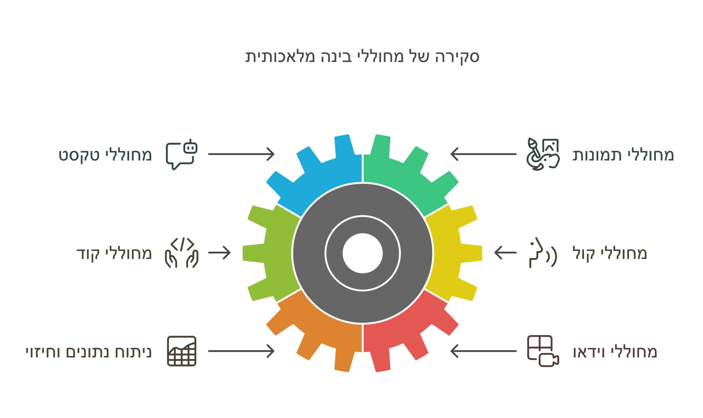
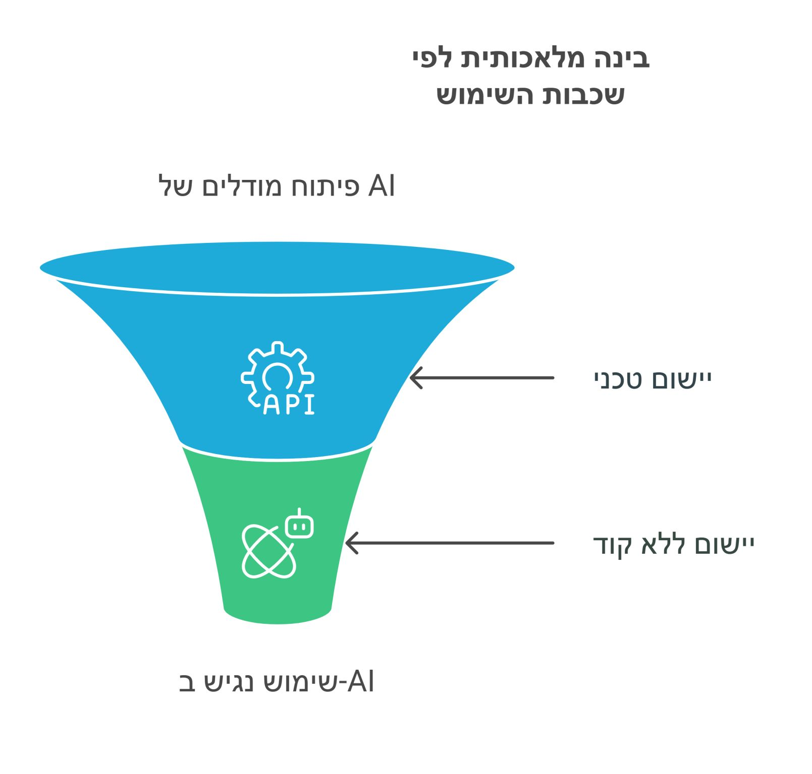

בינה מלאכותית 🍴על קצה המזלג - חילקתי בצורה גסה את התחום כדי שנוכל לראות אותו במבט על ולענות על השאלה: איפה אנחנו נמצאים?
פורסם במקור ב LinkedIn
בינה מלאכותית 🍴על קצה המזלג - חילקתי בצורה גסה את התחום כדי שנוכל לראות אותו במבט על ולענות על השאלה: איפה אנחנו נמצאים?
כפי שאני רואה את הדברים - ניתן לחלק בגסות את עולם הבינה המלאכותית לחלוקה ורטיקלית וחלוקה אופקית:
חלוקה ורטיקלית - תחומים שונים בהם פותחו יכולות של בינה מלאכותית:
📜 מחוללי טקסט (Text Generators):
כלים כמו GPT, Claude, וכו' (צ'אטבוטים, כתיבת תוכן, קוד). מחוללים אלה מתמקדים ביכולת לייצר שפה טבעית ברמה מרשימה. יכולת ההתבטאות של הכלים האלה יוצאת דופן כפי שכולנו כבר יודעים.
🖼️ מחוללי תמונות (Image Generators):
כלים כמו DALL·E ו-MidJourney, ודומיהם, שמאפשרים ליצור תמונות מרהיבות מתיאור מילולי בלבד, ואף עיבוד תמונות קיימות.
💻 מחוללי קוד (Code Generators):
כלים כמו Copilot שיושבים בצורה אינטגרלית בתוך כלי הפיתוח ולפעמים אפילו במקומם, ומסייעים למפתחים בכתיבת קוד מהיר ומדויק יותר.
🎙️ מחוללי קול (Voice Generators):
טכנולוגיות כמו ElevenLabs שמאפשרות יצירת דיבור איכותי, חיקוי קולות ועוד, ואף כלים ליצירת מוזיקה כמו Suno.
📊 ניתוח נתונים וחיזוי (Data Analysis & Prediction):
כלים כמו Tableau או Power BI שמשתמשים ב-AI לחיזוי טרנדים וניתוח מערכי נתונים מורכבים. תחום שעדיין נמצא בחיתוליו עקב האתגר הגדול של בינה מלאכותית להתמודד עם כמויות גדולות של תוכן.
🎥 מחוללי וידאו (Video Generators):
כלים כמו Pika ו-Runway המאפשרים ליצור סרטונים קצרים, לערוך תוכן וידאו ולהוסיף אפקטים לסרטונים, תחום שמתפתח ומשתכלל בקצב חסר תקדים, עם המון תחרות.
המבט השני שניתן לראות הוא חלוקה אופקית - שכבות השימוש בבינה מלאכותית, שבעיני ניתן לחלק בגסות ל-3 שכבות:
🛠️ בניית הכלים עצמם
אותם מהנדסים שנמצאים באקדמיה ובתשתיות הבינה המלאכותית, ומפתחים מודלים גדולים כמו GPT-4, Stable Diffusion או BERT. זו העבודה "מאחורי הקלעים" שמבוצעת על ידי ענקיות טכנולוגיה כמו OpenAI, Google ו-Meta. שכבה זו דורשת משאבים עצומים של ידע טכני, כוח מחשוב אדיר ומדעני נתונים מהשורה הראשונה.
🔧 יישום טכני באמצעות כלים
כאן נכנסים לתמונה מפתחים ומהנדסים מהשורה, שמשתמשים ב-APIs ובסביבות פיתוח כמו Hugging Face, Azure AI או Google Cloud כדי ליצור פתרונות מותאמים אישית עבור עסקים ואפליקציות.
🌐 יישום ללא ידע בקוד (או ללא צורך)
שכבת הציבור הרחב - המקום שבו הטכנולוגיה הופכת לנגישה לכולם, כגון מנהלי מוצר שבונים אתרים שלמים בעזרת כלים כמו ChatGPT ו-Canva AI. כלים אלה מאפשרים לכל אחד, גם ללא רקע טכנולוגי, ליצור תוכן, לייעל משימות ולהפוך רעיונות למציאות, וקהילות שלמות כבר נבנות ומתגבשות סביב התחום הזה.
החל מהחידושים הטכנולוגיים בשכבות הבסיס ועד הכלים היומיומיים שמשנים את שגרת החיים, לכל שכבה יש תפקיד חשוב בהנגשת הבינה המלאכותית, ועל אף שהטכנולוגיה עוד בחיתוליה - בכל שכבה יש כבר קהילות תוססות, מפיתוחי מחוללים מותאמים אישית (LLM), ועד ליצירת אתרים ללא ידע בקוד (Lovable).
רק היום חברת Cursor הצעירה הכריזה על גיוס משמעותי ROUND B של מעל 100 מליון דולר! קשה לתפוס עד כמה מתערערות תעשיות שלמות בעקבות המהפכה הזו. הכלי האחרון שעשה כזה מהפך VS Code היה מגובה בחברת ענק (מיקרוסופט) והצליח בזכות גישת ה-Open source וההנגשה שלו בחינם לכולם.
הבינה המלאכותית משנה את כללי המשחק - החל מהחיים הפרטיים ועד לעסקים גלובליים. איפה היא משתלבת בחיים שלכם או בארגון שלכם?

